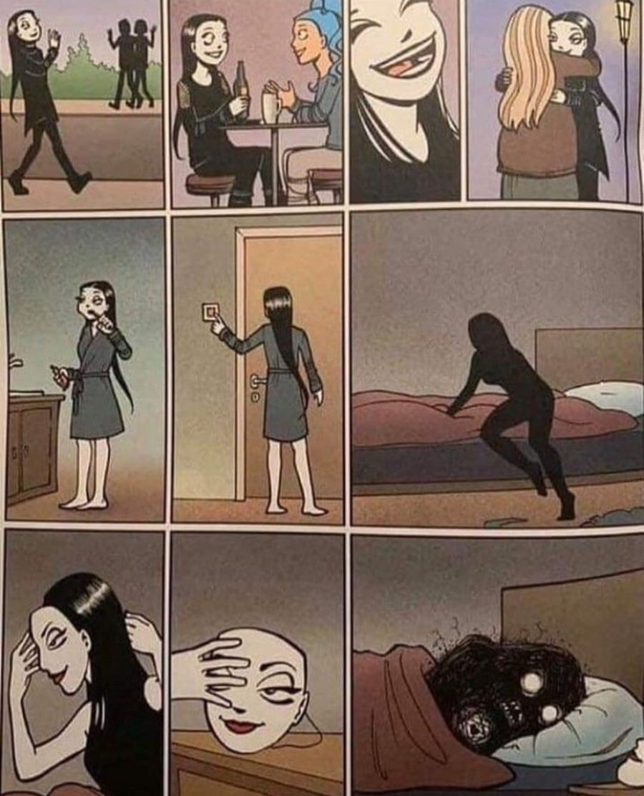
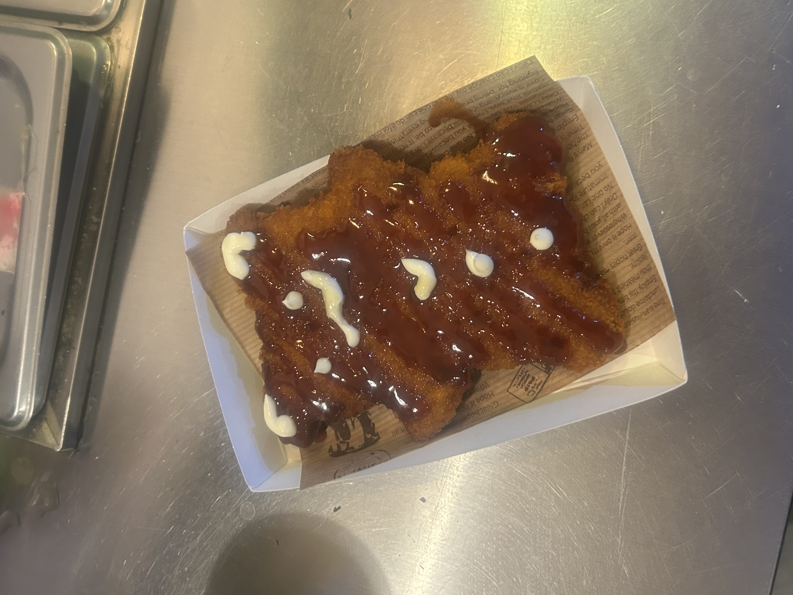
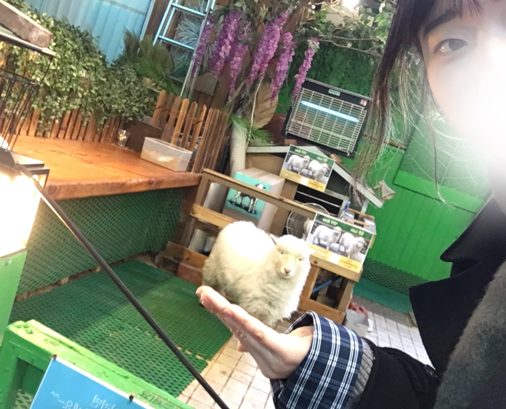

반갑습니다!
이곳은 행정학과 23학번 04년생 원숭이띠 이예담의 자기소개 페이지입니다.
♬ 스크롤 내리시기 전에! 제가 요즘 빠진 노래가 있는데
한 번씩 들어 보세요. . . (강요는 아닙니다)
이예담 요약.zip
MBTI는 INFJ입니다.
다들 페르소나 아시나요?
그리스어로 가면을 뜻하는 단어인데요
INFJ는 사회적 가면을 많이 쓴다고 합니다
… 맞는 것 같습니다… ㅠㅠ
저 조차도 제 성격을 잘 모르겠어요

피카츄 귀엽게 그려 주는
PC방 찾으시나요
고3 끝나고 첫 알바가
pc방 알바였는데 어쩌다 보니 다른 PC방에서
또 하게 됐네요 ㅜㅜ 나름 재밌어요 ㅎㅎ..

동물이 좋아요 ♥
릴스 5번에 1번꼴로 동물 등장…
무해한 동물을 많이 좋아하는 것 같아요
예를 들면 양이나 강아지?
